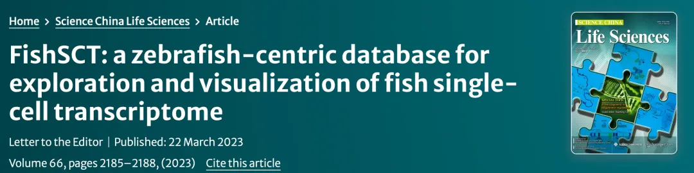
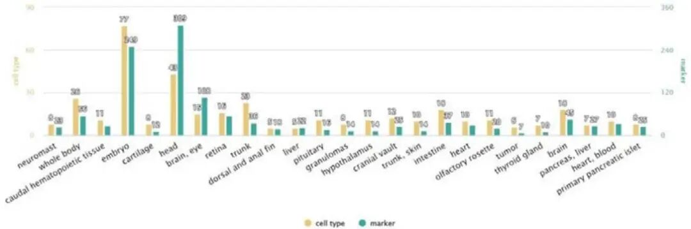
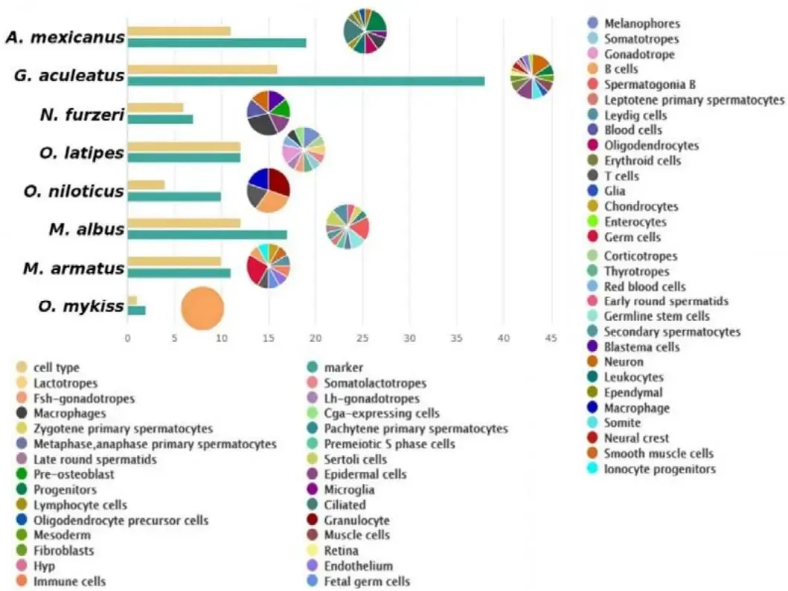
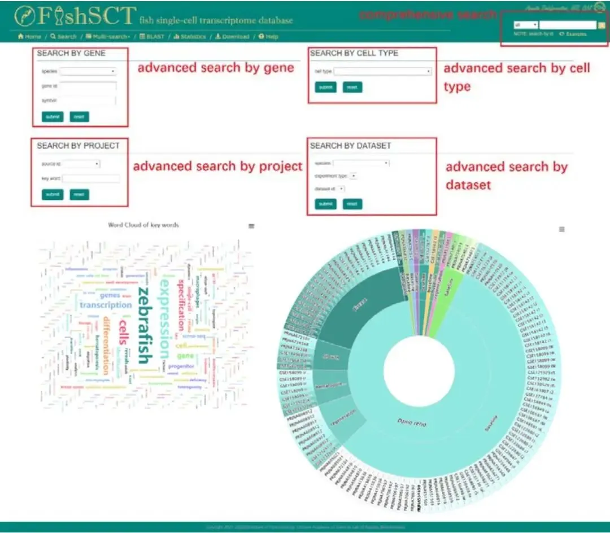
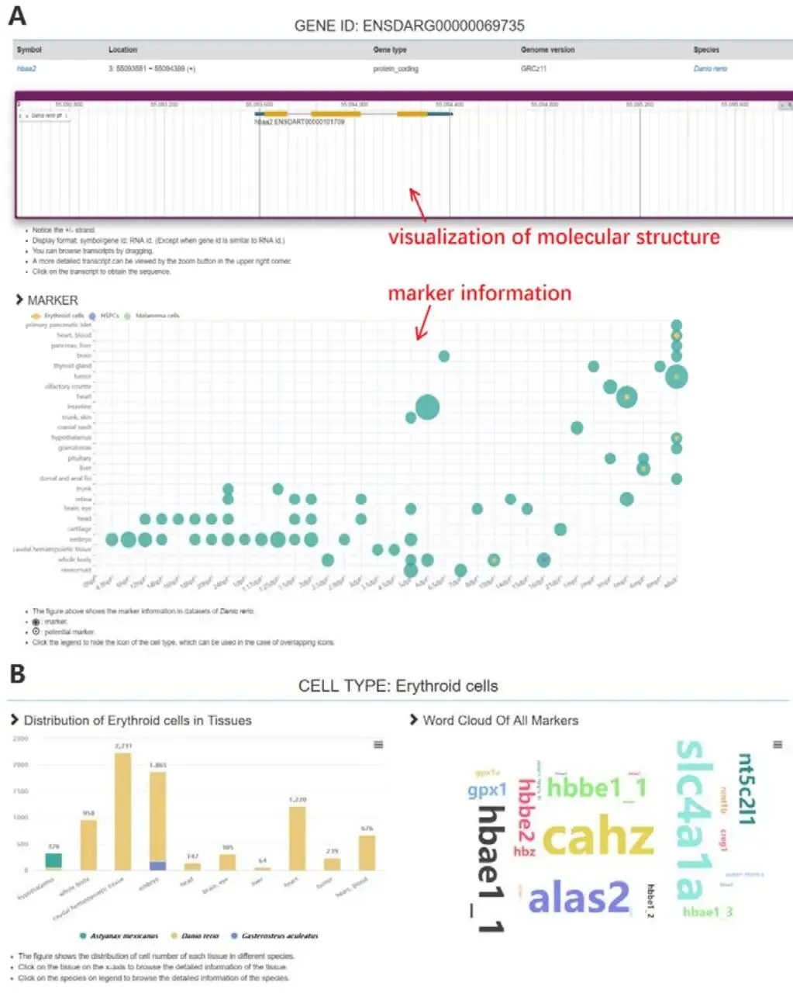
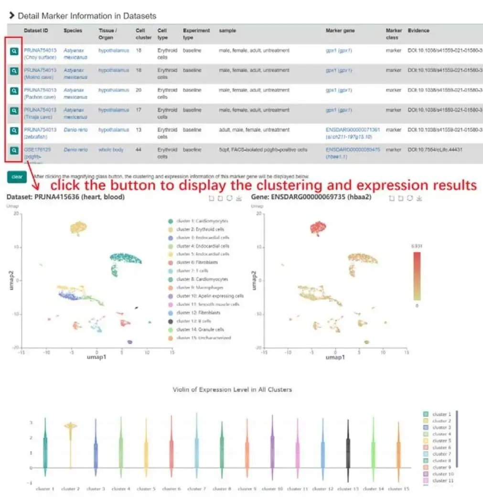
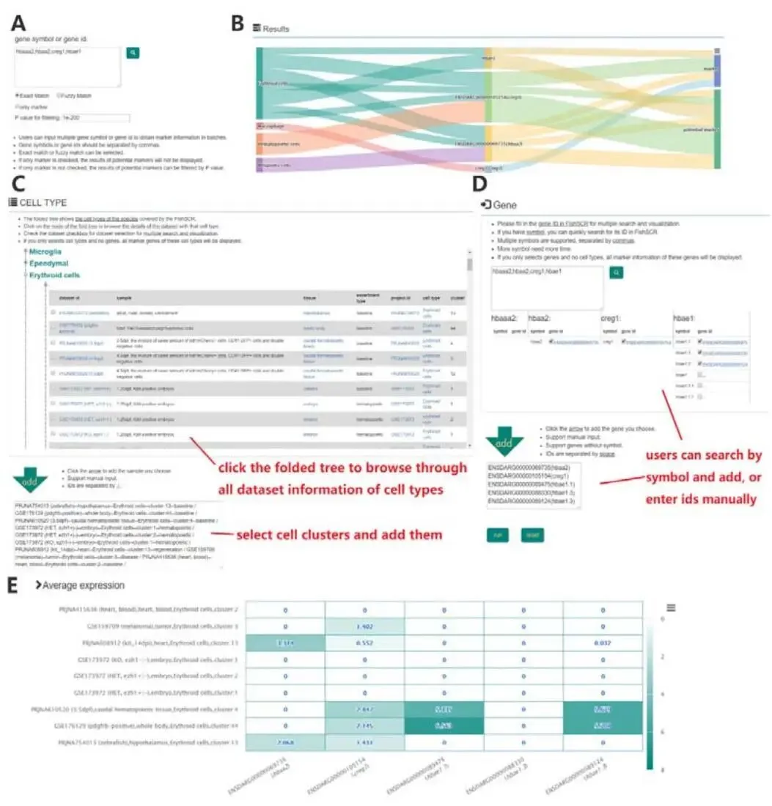
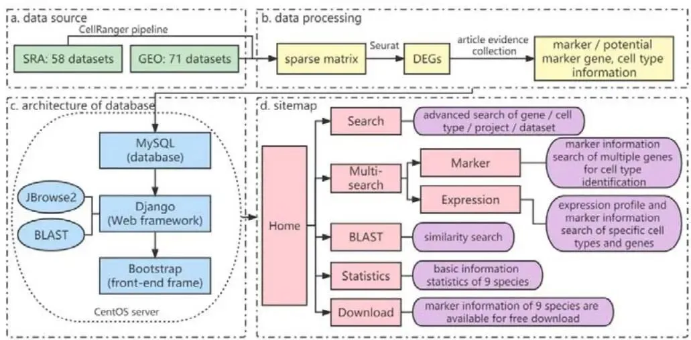

鱼类也有自己的scRNA-seq数据库——FishSCT
原文：https://mp.weixin.qq.com/s?__biz=MzAwMzIzOTk5OQ==&mid=2247530803&idx=1&sn=e0e53416c8e41f2289973c17a82ae881&chksm=9b3c0063ac4b8975c005b7adcb4511b9be9778911ee4dd3a0866c839bfe87ac90cf31efe3ba0#rd 合集：文献速递
一、写在前面
本次分享的是《Science China Life Sciences》（IF=12.375）的文章****，**** 感兴趣的同学可以看看原文：FishSCT:a zebrafish-centric database for exploration and visualizat of fish single-cell transcriptome" ，DOI: 10.1007/s11427-022-2293-4

文章背景：
单细胞 RNA 测序（scRNA-seq） 技术的快速发展，为鱼类生物学研究提供了高分辨率的细胞异质性解析工具 。例如以斑马鱼（Danio rerio） 为代表的研究种群，其单细胞转录组数据积累迅速 。在产生的大量测序数据中，碎片化和标准化问题已成为研究的瓶颈 。FishSCT 数据库的构建 正是为了解决这一痛点 ，它整合了斑马鱼及其他 8 种鱼类的 129 个数据集 ，涵盖 44 个项目 ，提供了 964/26,965 个标记/潜在标记基因信息 ，涉及 245 种细胞类型 。该数据库以斑马鱼 为中心，覆盖 25 种组织/器官 和 36 个发育时间点 ，形成完整的时间序列 。FishSCT 还开发了用户友好的 web 接口 ，支持信息浏览、细胞类型鉴定和表达谱可视化 。本文详述了FishSCT 的构建过程、数据处理流程 及其在鱼类单细胞转录组研究中的应用价值 ，旨在为相关领域提供一站式资源平台。
** **
如果需要 数据分析指导** 、生信热点全文复现 、自测数据个性化分析 辅导、常态化实验学习，欢迎联系客服微信[Biomamba_zhushou]**
二、主要内容
1. FishSCT数据库的规模
目前，FishSCT数据库共收录了964个标记基因（marker genes） 和26,965个潜在标记基因（potential marker genes） 的信息，这些信息覆盖了245种不同的细胞类型 ，数据来源于总计646,641个单细胞的转录组。作为数据库的核心，斑马鱼（zebrafish） 的数据占据主要位置，包含了针对其222种细胞类型的848个标记基因和13,800个潜在标记基因（图1）。作者通过图1直观地展示了斑马鱼不同组织或器官中所包含的细胞类型及标记基因的数量。除了斑马鱼，FishSCT还涵盖了另外8种鱼类，包括重要的模式生物青鳉（medaka） 以及7种具有经济或观赏价值的鱼类。通过对这些鱼类公开数据的统一分析，作者为它们的58种细胞类型挖掘出了116个标记基因和超过13,000个潜在标记基因（图2）。

图1

图2
2.FishSCT数据库功能与网页界面
研究团队开发了一个功能全面且用户友好的交互式网站（interactive website） 便于让用户能够方便地访问和利用数据库中的海量数据。该网站提供了多种数据检索方式，包括一个用于快速查询的综合搜索（comprehensive search） 框、一个提供多条件筛选的高级搜索（advanced search） 页面，以及一个集成的BLAST 工具，支持用户通过序列同源性进行搜索。搜索结果会导向内容详尽的基因、细胞类型或物种详情页（图3）。其中，基因详情页的一个核心特色是为斑马鱼数据设计了一种创新的气泡图（bubble diagram） ，该图能够在一个视图中同时展示某个基因在不同发育时间点、不同组织器官以及不同细胞类型中作为标记基因的情况（图4A）。此外，网站还提供了强大的交互式可视化功能，用户可以随时点击查看任意数据集中特定基因在细胞聚类图（cell clustering plots） 上的表达分布（图5）。针对细胞类型鉴定这一核心应用场景，网站还特别开发了**“Multi-search”功能** 。其“Marker”标签页允许用户同时输入多个基因，并通过桑基图（Sankey diagram） 直观地展示这些基因共同标记的细胞类型（图6B），极大地提升了鉴定效率。其“Expression”标签页则允许用户自定义选择细胞群和基因，生成用于比较分析的热图（heatmap） （图6E）。最后，网站还提供了数据统计（statistics） 和下载（download） 页面，方便用户概览数据库内容并获取完整的标记基因列表用于离线分析。在最后，作者用一张详细的技术路线图展示了FishSCT数据库的全貌（图7）

图3

图4

图5

图6

图7
三、总结讨论
作为首个专注于鱼类单细胞转录组的数据库 ，FishSCT 通过统一管道处理多源数据 ，成功构建了斑马鱼及其他鱼类的综合资源库 ，提供了丰富的标记基因信息和表达谱可视化工具 。该数据库在揭示鱼类细胞异质性和发育动态 方面的潜力巨大 ，尤其在斑马鱼多组织/器官时间序列数据 上展现出独特价值 。鉴于当前数据库主要依赖现有公开数据集，未来仍需进一步扩展物种覆盖和数据深度 ，同时优化算法以提升标记基因准确性 。随着 scRNA-seq 技术的进步，FishSCT 在未来可整合多组学数据（如空间转录组） ，为鱼类进化生物学、药物筛选和比较基因组学 研究注入新活力 。FishSCT 不仅是鱼类研究的宝贵平台 ，更是推动模式生物单细胞分析标准化进程的重要一步 。

如何联系我们

 留一个领取资料、开箱即用的单细胞分析镜像的微信号[Biomamba_zhushou]，方便各位随时交流。同时我们也构建了交流群矩阵，欢迎大家入群讨论。
大家可以阅读完这几篇之后添加给生信入门初学者的小贴士
没有检索，就没有发言权
留一个领取资料、开箱即用的单细胞分析镜像的微信号[Biomamba_zhushou]，方便各位随时交流。同时我们也构建了交流群矩阵，欢迎大家入群讨论。
大家可以阅读完这几篇之后添加给生信入门初学者的小贴士
没有检索，就没有发言权
已有生信基地联系方式的同学无需重复添加

 您点的每个赞和在看，我都认真当成了喜欢
您点的每个赞和在看，我都认真当成了喜欢